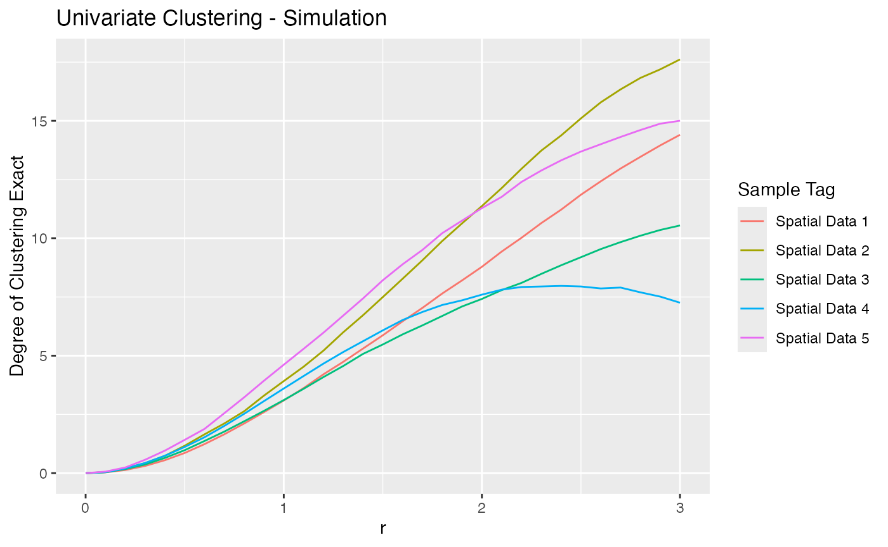
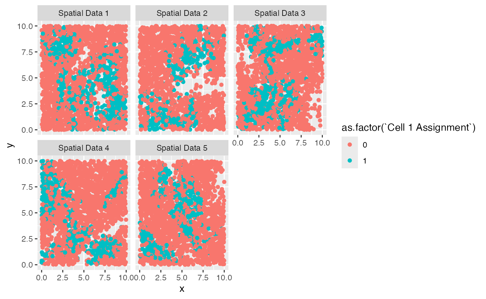

Using with spatialTIME
Source:vignettes/a02_Using_with_spatialTIME.Rmd
a02_Using_with_spatialTIME.RmdBackground
More than likely, you are going to want to use another package to analyze the simulated data produced by scSpatialSIM. Here, we will show how the output from scSpatialSIM works seemlessly with the spatial analysis package, spatialTIME
Simulating Data
First thing we need to do is simulate data. The
vignette("Introduction) showed us how we can do this in a
univariate way where only a single cells positivity was simulated and
bivaraiate way where we get positivity for multiple cell types. We can
use this data with spatialTIME to derive spatial
statistics like Ripley’s K. See the spatialTIME package for
more information about everything the package can do.
library(scSpatialSIM)
#> scSpatialSIM Version:
#> 0.1.3.3
#> _____ _ _ _ _____ _____ __ __
#> / ____| | | (_) | |/ ____|_ _| \/ |
#> ___ ___| (___ _ __ __ _| |_ _ __ _| | (___ | | | \ / |
#> / __|/ __|\___ \| '_ \ / _` | __| |/ _` | |\___ \ | | | |\/| |
#> \__ \ (__ ____) | |_) | (_| | |_| | (_| | |____) |_| |_| | | |
#> |___/\___|_____/| .__/ \__,_|\__|_|\__,_|_|_____/|_____|_| |_|
#> | |
#> |_|
#>
#> Fridley Lab EnjoyIn this vignette, we will stick with a single cell type and look at univariate clustering with and without holes to display the caution that should be taken when using the observed Ripley’s K values.
#set seed
set.seed(333)
#create the new object
sim_object = CreateSimulationObject(sims = 5, cell_types = 1) %>%
#produce the point pattern
GenerateSpatialPattern()
#> No `window` specified - defaulting to x (0, 10); y (0, 10)
#make tissues
sim_object = GenerateTissue(sim_object, density_heatmap = F) %>%
#create holes
GenerateHoles(hole_prob = c(0.3, 0.5), density_heatmap = F) %>%
#Create positive/negative cells
GenerateCellPositivity(probs = c(0, 0.9))
#> Computing tissue probability
#> Computing hole probability
#> Computing probability for Cell 1With the simulation object filled in with a single cell type, it can
be split into a spatial list as well as a summary using
CreateSpatialList() and
SummariseSpatial().
#creating the spatial list
spatial_list = CreateSpatialList(sim_object, single_df = F)
#summarise the spatial list
summary_df = SummariseSpatial(spatial_list, markers = "Cell 1 Assignment")
head(summary_df)
#> # A tibble: 5 × 4
#> `Sample Tag` `Total Cells` `Cell 1 Assignment` `% Cell 1 Assignment`
#> <chr> <int> <dbl> <dbl>
#> 1 Spatial Data 1 2495 673 27.0
#> 2 Spatial Data 2 2450 475 19.4
#> 3 Spatial Data 3 2500 582 23.3
#> 4 Spatial Data 4 2514 525 20.9
#> 5 Spatial Data 5 2486 450 18.1Using with spatialTIME
library(spatialTIME)
#> spatialTIME version:
#> 1.3.4.2
#> If using for publication, please cite our manuscript:
#> https://doi.org/10.1093/bioinformatics/btab757The spatialTIME package requires the input of 3 things. 1) spatial data frames in list format, 2) a summary of those spatial data frames, and 3) a clinical data frames The summary data frame acts as a linker between the spatial data frame IDs and the entries in the clinical data frame. Our spatial data frames need 1 more column: their name. This is pretty easy to do.
#loop over all spatial data frames and add their names
sf_names = names(spatial_list)
spatial_list = lapply(setNames(sf_names, sf_names), function(nam){
spatial_list[[nam]] %>%
dplyr::mutate(`Sample Tag` = nam, .before = 1)
})Our summary data frame already contains the names of the spatial data frames but needs a patient ID added.
summary_df$`Patient ID` = 1:5The number 3 data we needed was the clinical data frame. For the sake of this example we will just make a single columned data frame with 1 through 5 to match the “Patient ID” in the summary data.
clinical = data.frame(`Patient ID` = 1:5, check.names = F)These column names will be used when creating the mIF
object along with the 3 data objects.
mif = create_mif(clinical_data = clinical,
sample_data = summary_df,
spatial_list = spatial_list,
patient_id = "Patient ID",
sample_id = "Sample Tag")
mif
#> 5 patients spanning 5 samples and 5 spatial data frames were foundSince our window is from 0 to 10 (10 units), we should keep our search radius max less than 5. Lets do Univariate Ripley’s K from 0 to 3 units and visualize the results.
mif = ripleys_k(mif = mif, mnames = "Cell 1 Assignment", r_range = seq(0, 3, 0.1),
permute = FALSE, edge_correction = "translation", workers = 1,
xloc = "x", yloc = "y")
#> Joining with `by = join_by(r)`
#> Joining with `by = join_by(r)`
#> Joining with `by = join_by(r)`
#> Joining with `by = join_by(r)`
#> Joining with `by = join_by(r)`
library(ggplot2)
mif$derived$univariate_Count %>%
ggplot() +
geom_line(aes(x = r, y = `Degree of Clustering Exact`, color = `Sample Tag`)) +
labs(title = "Univariate Clustering - Simulation")
Up until now, we have been using the all simulated cells. We can
filter the spatial_list down to create another mIF object that doesn’t
have the cells belonging to the class of “hole”
(Hole Assignment == “Keep”). For now, sub-setting to only
Tissue 1 or Tissue 2 will be left alone. Let’s create this mIF and run
Ripley’s K on it.
mif_holes = create_mif(clinical_data = clinical,
sample_data = summary_df,
spatial_list = lapply(spatial_list, function(spat){
spat %>%
dplyr::filter(`Hole Assignment` == "Keep")
}),
patient_id = "Patient ID",
sample_id = "Sample Tag")
mif_holes = ripleys_k(mif = mif_holes, mnames = "Cell 1 Assignment", r_range = seq(0, 3, 0.1),
permute = FALSE, edge_correction = "translation", workers = 1,
xloc = "x", yloc = "y")
#> Joining with `by = join_by(r)`
#> Joining with `by = join_by(r)`
#> Joining with `by = join_by(r)`
#> Joining with `by = join_by(r)`
#> Joining with `by = join_by(r)`To see the importance of using the exact CSR approach (or permutation) when there are holes on samples, first look at the spatial plots to see how much the holes are impacting the distribution of the points.
mif_holes$spatial %>%
do.call(dplyr::bind_rows, .) %>%
ggplot() +
geom_point(aes(x = x, y = y, color = as.factor(`Cell 1 Assignment`))) +
facet_wrap(~`Sample Tag`)
The regions with holes are rather small so wouldn’t
dat = do.call(dplyr::bind_rows, mif_holes$derived$univariate_Count)
dat %>%
dplyr::mutate(`Exact-Theo` = `Exact CSR` - `Theoretical CSR`) %>%
ggplot() +
geom_density(aes(x = `Exact-Theo`, fill = `Sample Tag`), alpha = 0.2, adjust = 0.2)This clearly shows that the exact typically has larger values than those of the theoretical (positive values). These can be visualized by calculating the frequency of rs that have an exact CSR measurement greater than the theoretical CSR estimate, indicating the the theoretical is underestimating the CSR of the cores.
dat %>%
dplyr::mutate(`Exact-Theo` = `Exact CSR` - `Theoretical CSR`) %>%
dplyr::group_by(`Sample Tag`) %>%
dplyr::mutate(prop = ifelse(`Exact-Theo` > 0, 1/dplyr::n(), 0)) %>%
dplyr::select(`Sample Tag`, r, `Exact-Theo`, prop) %>%
dplyr::summarise(`Total Fraction` = sum(prop))
#> # A tibble: 5 × 2
#> `Sample Tag` `Total Fraction`
#> <chr> <dbl>
#> 1 Spatial Data 1 0.355
#> 2 Spatial Data 2 0.645
#> 3 Spatial Data 3 0.968
#> 4 Spatial Data 4 0.968
#> 5 Spatial Data 5 0.968